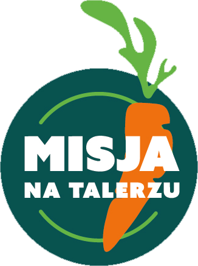

MISJA NA TALERZU
Indywidualne warsztaty kulinarne, które pokazują, że zdrowe gotowanie może być proste, sycące, naprawdę smaczne i na każdą kieszeń.
Warsztaty to propozycja dla osób, które szukają czegoś więcej niż kolejnej diety. To okazja, by odblokować kuchnię w praktycznym, przyjaznym stylu — bez poradników, za to z prawdziwą praktyką. Pokażę Ci jak gotować mądrze, tanio i zdrowo — tak, żeby posiłki były szybkie, pyszne i dopasowane do Twojego trybu życia. Bez zbędnego stresu, bez wyrzutów — za to z uśmiechem, rozmową i wiedzą, która naprawdę przydaje się w życiu.
Umów swoją kulinarną misję